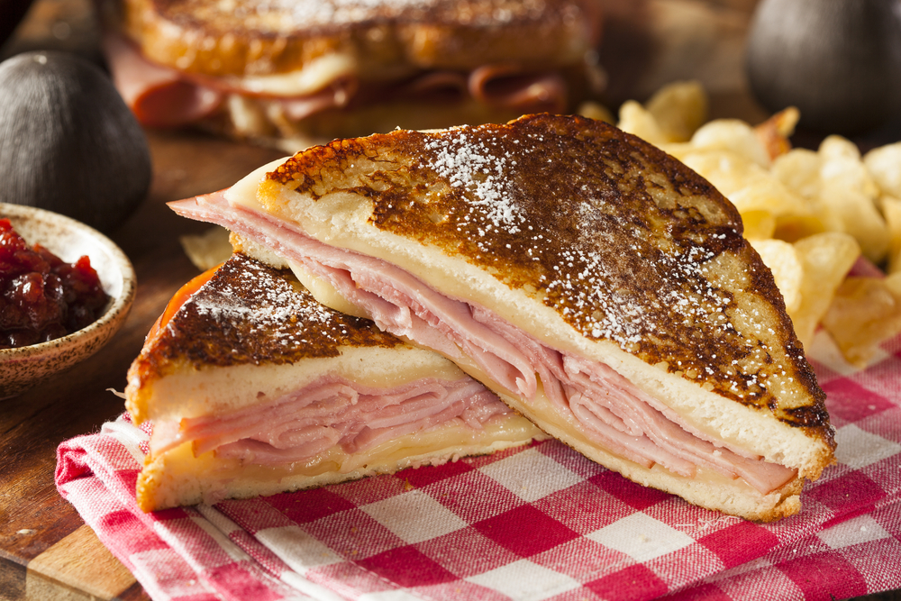

Monte-Cristo Recipe

The Monte-Cristo : a sexy Croque-Monsieur recipe
We all know how to enjoy a nice Croque-Monsieur, either hot or cold, as a nice dinner with a salad or on-the-go like a sandwich, that's a meal with numerous variations.
A very famous one is the Monte-Cristo, a version supposed to have appeared in South California during the 50's. Basically, the Croque-Monsieur is dipped in egs and pan-fried.
Ingredients
You'll read PS in the ingredients, it stands for "Per Sandwich"
- PS : 2 slices of white bread
- PS : 100g of ham
- PS : 100g of shredded gruyere
- PS : any spice or sauce wanted (tradionnaly will be a sauce Béchamel)
- Enough whisked eggs to dip all the sandwiches
Steps
- Place two slices of white bread on a flat surface. Spread freely sauces and/or spices on each slice
- Add thin slices of ham shredded gruyere cheese on top of the mustard and cover the cheese with the other part of the sandwich. In a nonstick pan over medium heat, add butter to melt.
- In a shallow bowl, add the eggs and whisk them until the egg whites and yolks are incorporated. Carefully dip the sandwiches in on both sides.
- Once the butter has been melted, fry on both sides for 2-3 minutes or until golden brown on top